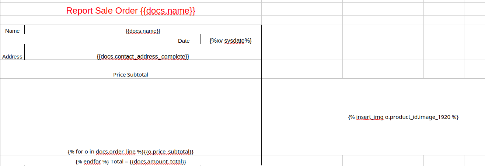
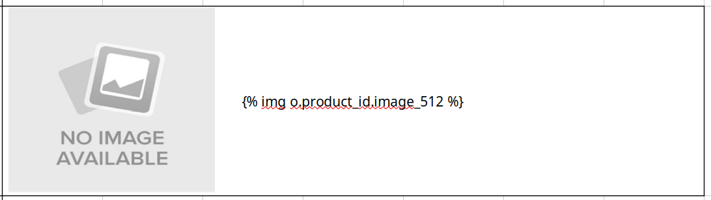

The XLSX Report Generator is a powerful Odoo module that helps you create professional Excel reports using only a .xlsx template and Jinja syntax. Generate customized spreadsheets directly from your Odoo data with support for images, formulas, multiple sheets, and advanced formatting.
Olivier Remacle www.ormdoo.com
This module inspired from Report Xlsx. and from module of Ali Ns here
Before installing this module, make sure to install the following libraries:
pip install xlsxtplDesign your report template in Microsoft Excel (.xlsx) using Jinja syntax to reference Odoo fields like {{docs.field_name}}.
In Odoo, create an XLSX Report Configuration, select the model, upload your template, and configure your report settings.
Print your report from any Odoo record - the module automatically fills in the template with actual data and generates a professional Excel spreadsheet.
Example template:

To call and write the field name, use the following format: {{docs.field_name}}, starting with the word "docs".
{% xv docs.date_field %}: Non-string value for a cell to specify a variable{% yn docs.boolean_field %}: return a checkbox base on boolean condition{{ spelled_out(docs.numeric_field) }}: Spell out numbers{{ formatdate(docs.date_field) }}: Format dates{{ convert_currency(docs.monetary_field, docs.currency_id) }}: Format monetary field{% insert_img docs.image_field %}: Insert image in cell (image fit to cell){% insert_img_cell docs.image_field %}: Insert image in cell (cell fit to image){% insert_img_cell docs.image_field, width=200, height=200 %}: Insert image in cell (custom image size){% img docs.image_field %}: Replace dummy image with image field, *require dummy image in templateImage Replacement Syntax:

Note: The functions will be updated as needed.
The language is automatically detected from the user's Odoo settings, but can be overridden if needed, example = {{ spelled_out(docs.numeric_field, lang='en_US') }}
Odoo Version: 19.0
License: LGPL-3
Depends: base, web
We welcome any feedback and suggestions, especially for improving this module. Thank you!
Website: www.ormdoo.com